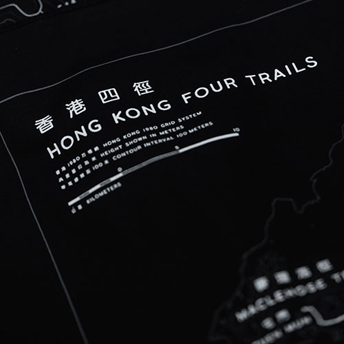
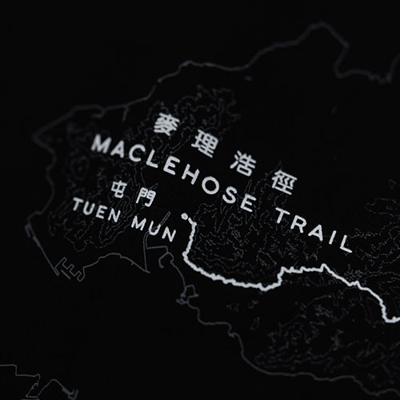
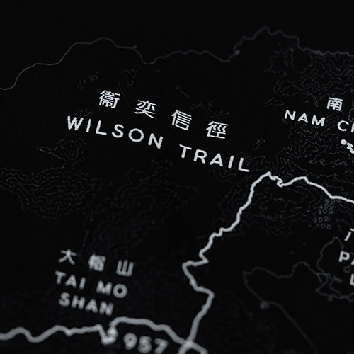
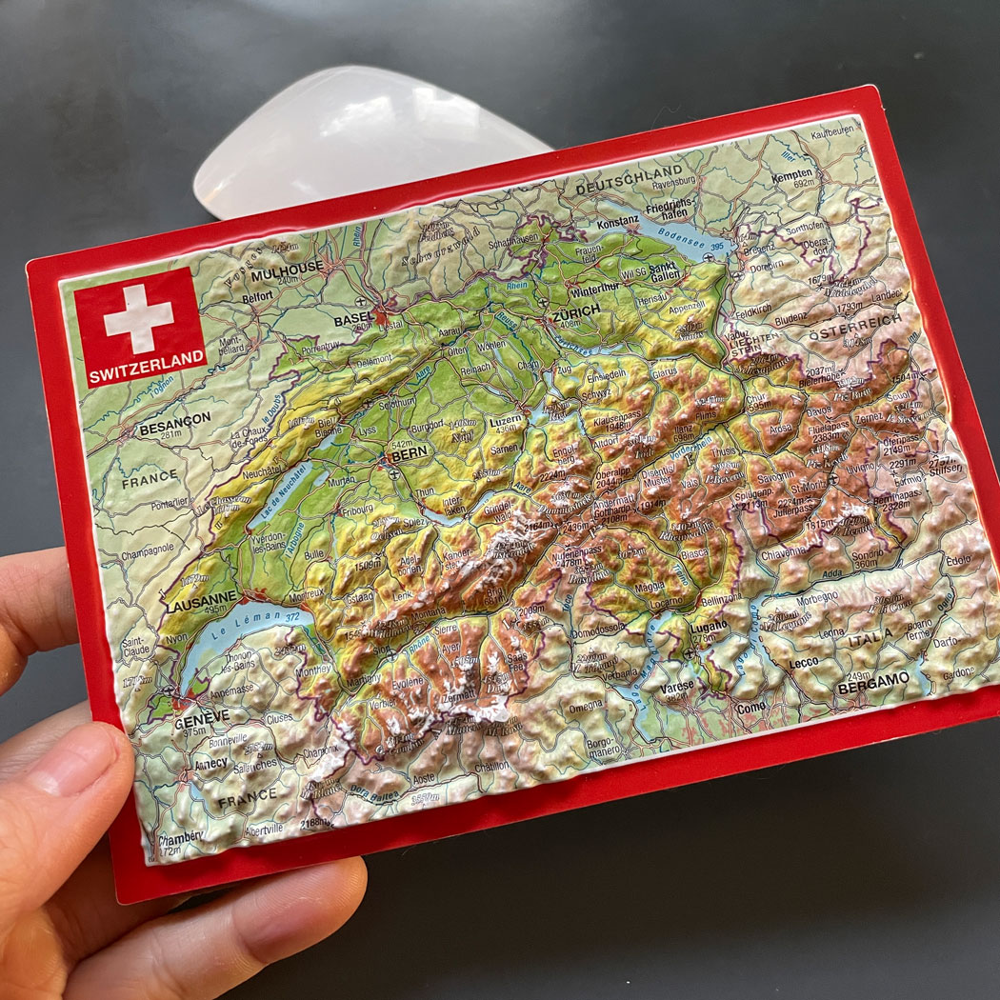

CLOTH 18 x 18 inches
PRINT 14 x 14 inches
Silk screen by Colorful Screen Print
Map by @lkk
Type design by @fibikung
Production by @lkk @hakdim
In the summer of 2022, I hiked the Hong Kong four trails. It was one of the hardest and most memorable things I've ever done. You can read more about my journey in this interactive.
Making this map was a way to commemorate my journey. I did everything from sourcing the fabric to working with a local family shop for the screen printing. It was an all new learning experience for me. Fibi Kung, a designer friend, created a typeface for this project. AM, a friend who runs a local brand Hakdim, helped with logistics. We sold over 200 copies.
Printing at Colorful Screen Print
Here are some close ups of the map.




91 x 61 cm
I've always admired National Geographic maps with detailed landscapes and labeling. I have a treasure chest at home full of old maps.
This wall map is my take on that kind of detailed mapping to my favorite trails in Hong Kong.
4 x 6 inches
Years ago in Switzerland, I came across this raised relief postcard. I loved the style and I've always wanted to make one of Hong Kong.

I've ran a bunch of failed experiements and contacted a bunch of shops... But I still don't have a way to actually make this! If you do, let me know!
Open 22" x 8.5"
Folded 2.75" x 4.25"
When I was a kid and went on hiking trips, we navigated with a compass and a paper map. It's a different world today, but I still love a good paper trail map and I collect them everywhere I go. Here is my interpretation of paper trail maps for my favorite trails in the world.
50 x 70 cm
A collection of the most epic boulders in Squamish. On the Southern end, you have Majestic V6, an iconic deep water solo climb. With the two insets, you can see the details of the galore of climbs in the Grand Wall, Apron and the North Walls area. At the Northern end of the map, there is Paradise Valley, with climbs nestled deep in a forest trail.